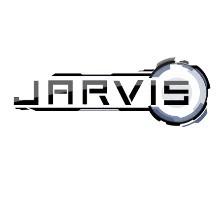

JARVIS 2.0
> System initialized // User: Sparsh Rathore

About
This project is inspired by J.A.R.V.I.S from Iron Man. Jarvis2.0 is a personal exploration into desktop automation, voice processing, and real-time vision.
The goal is to create an AI that doesn't just respond to prompts, but actually understands the user, I want it to do so many other things and yeah they are coming, you will just have to wait for it. You can message me on my socials tho I'm always online.